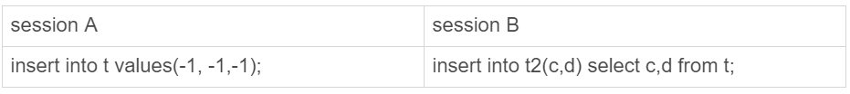
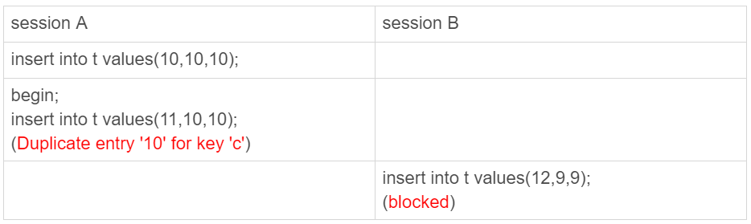
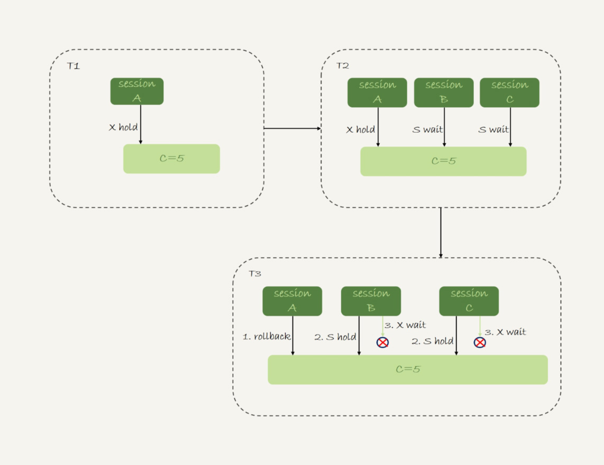

<!DOCTYPE html>


  


<html class="theme-next pisces use-motion" lang="zh-Hans">
<head><meta name="generator" content="Hexo 3.9.0">
  <meta charset="UTF-8">
<meta http-equiv="X-UA-Compatible" content="IE=edge">
<meta name="viewport" content="width=device-width, initial-scale=1, maximum-scale=2">
<meta name="theme-color" content="#222">


<link rel="stylesheet" href="/lib/font-awesome/css/font-awesome.min.css?v=4.6.2">

<link rel="stylesheet" href="/css/main.css?v=7.0.0">


  <link rel="apple-touch-icon" sizes="180x180" href="/images/apple-touch-icon-next.png?v=7.0.0">


  <link rel="icon" type="image/png" sizes="32x32" href="/images/favicon-32x32-next.png?v=7.0.0">


  <link rel="icon" type="image/png" sizes="16x16" href="/images/favicon-16x16-next.png?v=7.0.0">


  <link rel="mask-icon" href="/images/logo.svg?v=7.0.0" color="#222">


<script id="hexo.configurations">
  var NexT = window.NexT || {};
  var CONFIG = {
    root: '/',
    scheme: 'Pisces',
    version: '7.0.0',
    sidebar: {"position":"left","display":"post","offset":12,"b2t":false,"scrollpercent":false,"onmobile":false,"dimmer":false},
    fancybox: false,
    fastclick: false,
    lazyload: false,
    tabs: true,
    motion: {"enable":true,"async":false,"transition":{"post_block":"fadeIn","post_header":"slideDownIn","post_body":"slideDownIn","coll_header":"slideLeftIn","sidebar":"slideUpIn"}},
    algolia: {
      applicationID: '',
      apiKey: '',
      indexName: '',
      hits: {"per_page":10},
      labels: {"input_placeholder":"Search for Posts","hits_empty":"We didn't find any results for the search: ${query}","hits_stats":"${hits} results found in ${time} ms"}
    }
  };
</script>


  


  <meta name="description" content="insert…select为什么要对目标表加锁测试语句如下，注：隔离模式是RR，binlog_format=statement 1234567891011121314CREATE TABLE `t` (  `id` int(11) NOT NULL AUTO_INCREMENT,  `c` int(11) DEFAULT NULL,  `d` int(11) DEFAULT NULL,  PRIM">
<meta name="keywords" content="技术,数据库,锁">
<meta property="og:type" content="article">
<meta property="og:title" content="insert 语句的加锁">
<meta property="og:url" content="https://liuhao163.github.io/insert-语句的加锁/index.html">
<meta property="og:site_name" content="liuhao163.github.io">
<meta property="og:description" content="insert…select为什么要对目标表加锁测试语句如下，注：隔离模式是RR，binlog_format=statement 1234567891011121314CREATE TABLE `t` (  `id` int(11) NOT NULL AUTO_INCREMENT,  `c` int(11) DEFAULT NULL,  `d` int(11) DEFAULT NULL,  PRIM">
<meta property="og:locale" content="zh-Hans">
<meta property="og:image" content="https://liuhao163.github.io/insert-语句的加锁/img1.png">
<meta property="og:image" content="https://liuhao163.github.io/insert-语句的加锁/insert_block.png">
<meta property="og:image" content="https://liuhao163.github.io/insert-语句的加锁/insert_dead_lock.png">
<meta property="og:image" content="https://liuhao163.github.io/insert-语句的加锁/insert_dead_lock2.jpg">
<meta property="og:updated_time" content="2022-09-21T15:03:02.194Z">
<meta name="twitter:card" content="summary">
<meta name="twitter:title" content="insert 语句的加锁">
<meta name="twitter:description" content="insert…select为什么要对目标表加锁测试语句如下，注：隔离模式是RR，binlog_format=statement 1234567891011121314CREATE TABLE `t` (  `id` int(11) NOT NULL AUTO_INCREMENT,  `c` int(11) DEFAULT NULL,  `d` int(11) DEFAULT NULL,  PRIM">
<meta name="twitter:image" content="https://liuhao163.github.io/insert-语句的加锁/img1.png">


  <link rel="alternate" href="/atom.xml" title="liuhao163.github.io" type="application/atom+xml">


  <link rel="canonical" href="https://liuhao163.github.io/insert-语句的加锁/">


<script id="page.configurations">
  CONFIG.page = {
    sidebar: "",
  };
</script>

  <title>insert 语句的加锁 | liuhao163.github.io</title>
  


  <noscript>
  <style>
  .use-motion .motion-element,
  .use-motion .brand,
  .use-motion .menu-item,
  .sidebar-inner,
  .use-motion .post-block,
  .use-motion .pagination,
  .use-motion .comments,
  .use-motion .post-header,
  .use-motion .post-body,
  .use-motion .collection-title { opacity: initial; }

  .use-motion .logo,
  .use-motion .site-title,
  .use-motion .site-subtitle {
    opacity: initial;
    top: initial;
  }

  .use-motion .logo-line-before i { left: initial; }
  .use-motion .logo-line-after i { right: initial; }
  </style>
</noscript>

</head>

<body itemscope itemtype="http://schema.org/WebPage" lang="zh-Hans">

  
  
    
  

  <div class="container sidebar-position-left page-post-detail">
    <div class="headband"></div>

    <header id="header" class="header" itemscope itemtype="http://schema.org/WPHeader">
      <div class="header-inner"><div class="site-brand-wrapper">
  <div class="site-meta">
    

    <div class="custom-logo-site-title">
      <a href="/" class="brand" rel="start">
        <span class="logo-line-before"><i></i></span>
        <span class="site-title">liuhao163.github.io</span>
        <span class="logo-line-after"><i></i></span>
      </a>
    </div>
    
      
        <p class="site-subtitle">杂七杂八</p>
      
    
    
  </div>

  <div class="site-nav-toggle">
    <button aria-label="Toggle navigation bar">
      <span class="btn-bar"></span>
      <span class="btn-bar"></span>
      <span class="btn-bar"></span>
    </button>
  </div>
</div>


<nav class="site-nav">
  
    <ul id="menu" class="menu">
      
        
        
        
          
          <li class="menu-item menu-item-home">

    
    
    
      
    

    

    <a href="/" rel="section"><i class="menu-item-icon fa fa-fw fa-home"></i> <br>Home</a>

  </li>
        
        
        
          
          <li class="menu-item menu-item-categories">

    
    
    
      
    

    

    <a href="/categories/" rel="section"><i class="menu-item-icon fa fa-fw fa-th"></i> <br>Categories</a>

  </li>
        
        
        
          
          <li class="menu-item menu-item-tags">

    
    
    
      
    

    

    <a href="/tags/" rel="section"><i class="menu-item-icon fa fa-fw fa-tags"></i> <br>Tags</a>

  </li>
        
        
        
          
          <li class="menu-item menu-item-archives">

    
    
    
      
    

    

    <a href="/archives/" rel="section"><i class="menu-item-icon fa fa-fw fa-archive"></i> <br>Archives</a>

  </li>
        
        
        
          
          <li class="menu-item menu-item-sitemap">

    
    
    
      
    

    

    <a href="/sitemap.xml" rel="section"><i class="menu-item-icon fa fa-fw fa-sitemap"></i> <br>Sitemap</a>

  </li>

      
      
    </ul>
  

  

  
</nav>


  


</div>
    </header>

    


    <main id="main" class="main">
      <div class="main-inner">
        <div class="content-wrap">
          
            

          
          <div id="content" class="content">
            

  <div id="posts" class="posts-expand">
    

  

  
  
  

  

  <article class="post post-type-normal" itemscope itemtype="http://schema.org/Article">
  
  
  
  <div class="post-block">
    <link itemprop="mainEntityOfPage" href="https://liuhao163.github.io/insert-语句的加锁/">

    <span hidden itemprop="author" itemscope itemtype="http://schema.org/Person">
      <meta itemprop="name" content="Liu hao">
      <meta itemprop="description" content="励志当好厨子的程序员">
      <meta itemprop="image" content="/images/avatar.gif">
    </span>

    <span hidden itemprop="publisher" itemscope itemtype="http://schema.org/Organization">
      <meta itemprop="name" content="liuhao163.github.io">
    </span>

    
      <header class="post-header">

        
        
          <h1 class="post-title" itemprop="name headline">insert 语句的加锁

              
            
          </h1>
        

        <div class="post-meta">
          <span class="post-time">

            
            
            

            
              <span class="post-meta-item-icon">
                <i class="fa fa-calendar-o"></i>
              </span>
              
                <span class="post-meta-item-text">Posted on</span>
              

              
                
              

              <time title="Created: 2019-03-01 22:56:52" itemprop="dateCreated datePublished" datetime="2019-03-01T22:56:52Z">2019-03-01</time>
            

            
              

              
                
                <span class="post-meta-divider">|</span>
                

                <span class="post-meta-item-icon">
                  <i class="fa fa-calendar-check-o"></i>
                </span>
                
                  <span class="post-meta-item-text">Edited on</span>
                
                <time title="Modified: 2022-09-21 15:03:02" itemprop="dateModified" datetime="2022-09-21T15:03:02Z">2022-09-21</time>
              
            
          </span>

          
            <span class="post-category">
            
              <span class="post-meta-divider">|</span>
            
              <span class="post-meta-item-icon">
                <i class="fa fa-folder-o"></i>
              </span>
              
                <span class="post-meta-item-text">In</span>
              
              
                <span itemprop="about" itemscope itemtype="http://schema.org/Thing"><a href="/categories/Mysql/" itemprop="url" rel="index"><span itemprop="name">Mysql</span></a></span>

                
                
                  , 
                
              
                <span itemprop="about" itemscope itemtype="http://schema.org/Thing"><a href="/categories/Mysql/Mysql基础/" itemprop="url" rel="index"><span itemprop="name">Mysql基础</span></a></span>

                
                
              
            </span>
          

          
            
            
          

          
          

          

          

          

        </div>
      </header>
    

    
    
    
    <div class="post-body" itemprop="articleBody">

      
      

      
        <h1 id="insert…select为什么要对目标表加锁"><a href="#insert…select为什么要对目标表加锁" class="headerlink" title="insert…select为什么要对目标表加锁"></a>insert…select为什么要对目标表加锁</h1><p>测试语句如下，注：隔离模式是RR，binlog_format=statement</p>
<figure class="highlight sql"><table><tr><td class="gutter"><pre><span class="line">1</span><br><span class="line">2</span><br><span class="line">3</span><br><span class="line">4</span><br><span class="line">5</span><br><span class="line">6</span><br><span class="line">7</span><br><span class="line">8</span><br><span class="line">9</span><br><span class="line">10</span><br><span class="line">11</span><br><span class="line">12</span><br><span class="line">13</span><br><span class="line">14</span><br></pre></td><td class="code"><pre><span class="line"><span class="keyword">CREATE</span> <span class="keyword">TABLE</span> <span class="string">`t`</span> (</span><br><span class="line">  <span class="string">`id`</span> <span class="built_in">int</span>(<span class="number">11</span>) <span class="keyword">NOT</span> <span class="literal">NULL</span> AUTO_INCREMENT,</span><br><span class="line">  <span class="string">`c`</span> <span class="built_in">int</span>(<span class="number">11</span>) <span class="keyword">DEFAULT</span> <span class="literal">NULL</span>,</span><br><span class="line">  <span class="string">`d`</span> <span class="built_in">int</span>(<span class="number">11</span>) <span class="keyword">DEFAULT</span> <span class="literal">NULL</span>,</span><br><span class="line">  PRIMARY <span class="keyword">KEY</span> (<span class="string">`id`</span>),</span><br><span class="line">  <span class="keyword">UNIQUE</span> <span class="keyword">KEY</span> <span class="string">`c`</span> (<span class="string">`c`</span>)</span><br><span class="line">) <span class="keyword">ENGINE</span>=<span class="keyword">InnoDB</span>;</span><br><span class="line"></span><br><span class="line"><span class="keyword">insert</span> <span class="keyword">into</span> t <span class="keyword">values</span>(<span class="literal">null</span>, <span class="number">1</span>,<span class="number">1</span>);</span><br><span class="line"><span class="keyword">insert</span> <span class="keyword">into</span> t <span class="keyword">values</span>(<span class="literal">null</span>, <span class="number">2</span>,<span class="number">2</span>);</span><br><span class="line"><span class="keyword">insert</span> <span class="keyword">into</span> t <span class="keyword">values</span>(<span class="literal">null</span>, <span class="number">3</span>,<span class="number">3</span>);</span><br><span class="line"><span class="keyword">insert</span> <span class="keyword">into</span> t <span class="keyword">values</span>(<span class="literal">null</span>, <span class="number">4</span>,<span class="number">4</span>);</span><br><span class="line"></span><br><span class="line"><span class="keyword">create</span> <span class="keyword">table</span> t2 <span class="keyword">like</span> t</span><br></pre></td></tr></table></figure>
<p>执行如下的语句：</p>
<figure class="highlight sql"><table><tr><td class="gutter"><pre><span class="line">1</span><br></pre></td><td class="code"><pre><span class="line"><span class="keyword">insert</span> <span class="keyword">into</span> t2(c,d) <span class="keyword">select</span> c,d <span class="keyword">from</span> t;</span><br></pre></td></tr></table></figure>
<p>这条语句是给表t所有的字段和间隙加锁，原因是考虑到数据的一致性例如下面的情况:</p>
<p></p>
<p>SessionA和SessionB同时执行，SessionB会给索引c的(-supernum,-1]加上nextkey-lock，原因是如果没有这个锁，很可能主库上B先执行，A后执行，但是binlog上回是A先执行，B后执行，导致从库会出现-1的值，造成主备不一致</p>
<p>当然了，目标表的锁其实是给涉及到的字段加锁，详见前面的加锁原理</p>
<p>见下面俩种情况：</p>
<figure class="highlight sql"><table><tr><td class="gutter"><pre><span class="line">1</span><br></pre></td><td class="code"><pre><span class="line"><span class="keyword">insert</span> <span class="keyword">into</span> t2(c,d) <span class="keyword">select</span> c+<span class="number">1</span>,d <span class="keyword">from</span> t <span class="keyword">order</span> <span class="keyword">by</span> c <span class="keyword">desc</span> <span class="keyword">limit</span> <span class="number">1</span>;</span><br></pre></td></tr></table></figure>
<p>这条语句实际上会对表t中的索引c(3,4]和(4,supernum)加锁。扫描行数只有2行</p>
<p>但是下面的语句就不是很好了,把表t最大值+1插入会原表</p>
<figure class="highlight sql"><table><tr><td class="gutter"><pre><span class="line">1</span><br></pre></td><td class="code"><pre><span class="line"><span class="keyword">insert</span> <span class="keyword">into</span> t(c,d) <span class="keyword">select</span> c+<span class="number">1</span>,d <span class="keyword">from</span> t <span class="keyword">order</span> <span class="keyword">by</span> c <span class="keyword">desc</span> <span class="keyword">limit</span> <span class="number">1</span>;</span><br></pre></td></tr></table></figure>
<p>原因是：</p>
<ul>
<li>在一张表中操作，mysql为了select时候读到insert的值，需要将select的结果导入到临时表中</li>
<li>临时表是memory类型的表，因为有limit 1，需要将表里的数据都导入到临时表中，排序取第一条</li>
<li>所以需要全表扫描，并且对全表所有的行加锁。</li>
</ul>
<p>优化的方法是：采用临时表来解决语句如下</p>
<figure class="highlight sql"><table><tr><td class="gutter"><pre><span class="line">1</span><br><span class="line">2</span><br><span class="line">3</span><br><span class="line">4</span><br></pre></td><td class="code"><pre><span class="line"><span class="keyword">create</span> <span class="keyword">temporary</span> <span class="keyword">table</span> temp_t(c <span class="built_in">int</span>,d <span class="built_in">int</span>) <span class="keyword">engine</span>=<span class="keyword">memory</span>;</span><br><span class="line"><span class="keyword">insert</span> <span class="keyword">into</span> temp_t  (<span class="keyword">select</span> c+<span class="number">1</span>, d <span class="keyword">from</span> t <span class="keyword">force</span> <span class="keyword">index</span>(c) <span class="keyword">order</span> <span class="keyword">by</span> c <span class="keyword">desc</span> <span class="keyword">limit</span> <span class="number">1</span>);</span><br><span class="line"><span class="keyword">insert</span> <span class="keyword">into</span> t <span class="keyword">select</span> * <span class="keyword">from</span> temp_t;</span><br><span class="line"><span class="keyword">drop</span> <span class="keyword">table</span> temp_t;</span><br></pre></td></tr></table></figure>
<h1 id="insert违反唯一约束加锁"><a href="#insert违反唯一约束加锁" class="headerlink" title="insert违反唯一约束加锁"></a>insert违反唯一约束加锁</h1><p>见下图：<br></p>
<p>SessionA在第2次插入时候违反了唯一约束，这时候SessionB的语句并没有因为SessionA的insert失败开始执行反而是block住。原因是SessionA在后滚之前为冲突的索引(5,10]加了nextkey-lock读锁。</p>
<p>在并发情况下也会引起死锁，如图：<br></p>
<p>原因是：</p>
<ol>
<li>SessaionA为记录加行锁c=5。（唯一索引等值查询是行锁）</li>
<li>T2时刻SessionB和SessionC都对c=5加了读锁。（违反唯一约束）这时候都是等待状态</li>
<li>T3时刻SessionArollback，<ol>
<li>SessionB和SessionCD的读锁生效；</li>
<li>SessionB和SessionC要继续执行插入操作，这时候要对数据加写锁，这时候需要等待对方释放读锁，循环等待发生死锁。</li>
</ol>
</li>
</ol>
<p>见图:<br><br>解决方法</p>
<ol>
<li>事务中唯一约束冲突后要尽快提交或者回滚，防止并发写循环等待；</li>
<li>采用insert into…duplicate key update的方式，因为这时候会加一个nextkey-lock写锁是互斥的。这样sessionB和sessionC不会循环等待。</li>
</ol>

      
    </div>

    

    
    
    

    

    
      
    
    

    

    <footer class="post-footer">
      
        <div class="post-tags">
          
            <a href="/tags/技术/" rel="tag"># 技术</a>
          
            <a href="/tags/数据库/" rel="tag"># 数据库</a>
          
            <a href="/tags/锁/" rel="tag"># 锁</a>
          
        </div>
      

      
      
      

      
        <div class="post-nav">
          <div class="post-nav-next post-nav-item">
            
              <a href="/自增主键相关-AUTO-INCREMENT/" rel="next" title="自增主键相关-AUTO_INCREMENT">
                <i class="fa fa-chevron-left"></i> 自增主键相关-AUTO_INCREMENT
              </a>
            
          </div>

          <span class="post-nav-divider"></span>

          <div class="post-nav-prev post-nav-item">
            
              <a href="/如何最快的复制一张表/" rel="prev" title="如何最快的复制一张表">
                如何最快的复制一张表 <i class="fa fa-chevron-right"></i>
              </a>
            
          </div>
        </div>
      

      
      
    </footer>
  </div>
  
  
  
  </article>


  </div>


          </div>
          

  


        </div>
        
          
  
  <div class="sidebar-toggle">
    <div class="sidebar-toggle-line-wrap">
      <span class="sidebar-toggle-line sidebar-toggle-line-first"></span>
      <span class="sidebar-toggle-line sidebar-toggle-line-middle"></span>
      <span class="sidebar-toggle-line sidebar-toggle-line-last"></span>
    </div>
  </div>

  <aside id="sidebar" class="sidebar">
    <div class="sidebar-inner">

      

      
        <ul class="sidebar-nav motion-element">
          <li class="sidebar-nav-toc sidebar-nav-active" data-target="post-toc-wrap">
            Table of Contents
          </li>
          <li class="sidebar-nav-overview" data-target="site-overview-wrap">
            Overview
          </li>
        </ul>
      

      <div class="site-overview-wrap sidebar-panel">
        <div class="site-overview">
          <div class="site-author motion-element" itemprop="author" itemscope itemtype="http://schema.org/Person">
            
              <p class="site-author-name" itemprop="name">Liu hao</p>
              <p class="site-description motion-element" itemprop="description">励志当好厨子的程序员</p>
          </div>

          
            <nav class="site-state motion-element">
              
                <div class="site-state-item site-state-posts">
                
                  <a href="/archives/">
                
                    <span class="site-state-item-count">224</span>
                    <span class="site-state-item-name">posts</span>
                  </a>
                </div>
              

              
                
                
                <div class="site-state-item site-state-categories">
                  <a href="/categories/index.html">
                    
                    
                      
                    
                      
                    
                      
                    
                      
                    
                      
                    
                      
                    
                      
                    
                      
                    
                      
                    
                      
                    
                      
                    
                      
                    
                      
                    
                      
                    
                      
                    
                      
                    
                      
                    
                      
                    
                      
                    
                      
                    
                      
                    
                      
                    
                      
                    
                      
                    
                      
                    
                      
                    
                      
                    
                      
                    
                      
                    
                      
                    
                      
                    
                      
                    
                      
                    
                      
                    
                      
                    
                      
                    
                      
                    
                      
                    
                      
                    
                      
                    
                      
                    
                      
                    
                      
                    
                      
                    
                      
                    
                      
                    
                      
                    
                      
                    
                      
                    
                      
                    
                      
                    
                      
                    
                      
                    
                      
                    
                    <span class="site-state-item-count">54</span>
                    <span class="site-state-item-name">categories</span>
                  </a>
                </div>
              

              
                
                
                <div class="site-state-item site-state-tags">
                  <a href="/tags/index.html">
                    
                    
                      
                    
                      
                    
                      
                    
                      
                    
                      
                    
                      
                    
                      
                    
                      
                    
                      
                    
                      
                    
                      
                    
                      
                    
                      
                    
                      
                    
                      
                    
                      
                    
                      
                    
                      
                    
                      
                    
                      
                    
                      
                    
                      
                    
                      
                    
                      
                    
                      
                    
                      
                    
                      
                    
                      
                    
                      
                    
                      
                    
                      
                    
                      
                    
                      
                    
                      
                    
                      
                    
                      
                    
                      
                    
                      
                    
                      
                    
                      
                    
                      
                    
                      
                    
                      
                    
                      
                    
                      
                    
                      
                    
                      
                    
                      
                    
                      
                    
                      
                    
                      
                    
                      
                    
                      
                    
                      
                    
                      
                    
                      
                    
                      
                    
                      
                    
                      
                    
                      
                    
                      
                    
                      
                    
                      
                    
                      
                    
                      
                    
                      
                    
                      
                    
                      
                    
                      
                    
                      
                    
                      
                    
                      
                    
                      
                    
                      
                    
                      
                    
                      
                    
                      
                    
                      
                    
                      
                    
                      
                    
                      
                    
                    <span class="site-state-item-count">81</span>
                    <span class="site-state-item-name">tags</span>
                  </a>
                </div>
              
            </nav>
          

          
            <div class="feed-link motion-element">
              <a href="/atom.xml" rel="alternate">
                <i class="fa fa-rss"></i>
                RSS
              </a>
            </div>
          

          
            <div class="links-of-author motion-element">
              
                <span class="links-of-author-item">
                  
                  
                    
                  
                  
                    
                  
                  <a href="https://github.com/liuhao163" title="GitHub &rarr; https://github.com/liuhao163" rel="noopener" target="_blank"><i class="fa fa-fw fa-github"></i>GitHub</a>
                </span>
              
                <span class="links-of-author-item">
                  
                  
                    
                  
                  
                    
                  
                  <a href="mailto:liu67224657@qq.com" title="E-Mail &rarr; mailto:liu67224657@qq.com" rel="noopener" target="_blank"><i class="fa fa-fw fa-envelope"></i>E-Mail</a>
                </span>
              
            </div>
          

          

          
          

          
            
          
          

        </div>
      </div>

      
      <!--noindex-->
        <div class="post-toc-wrap motion-element sidebar-panel sidebar-panel-active">
          <div class="post-toc">

            
            
            
            

            
              <div class="post-toc-content"><ol class="nav"><li class="nav-item nav-level-1"><a class="nav-link" href="#insert…select为什么要对目标表加锁"><span class="nav-number">1.</span> <span class="nav-text">insert…select为什么要对目标表加锁</span></a></li><li class="nav-item nav-level-1"><a class="nav-link" href="#insert违反唯一约束加锁"><span class="nav-number">2.</span> <span class="nav-text">insert违反唯一约束加锁</span></a></li></ol></div>
            

          </div>
        </div>
      <!--/noindex-->
      

      

    </div>
  </aside>
  


        
      </div>
    </main>

    <footer id="footer" class="footer">
      <div class="footer-inner">
        <div class="copyright">&copy; 2018 – <span itemprop="copyrightYear">2022</span>
  <span class="with-love" id="animate">
    <i class="fa fa-user"></i>
  </span>
  <span class="author" itemprop="copyrightHolder">Liu hao</span>

  

  
</div>


  <div class="powered-by">Powered by <a href="https://hexo.io" class="theme-link" rel="noopener" target="_blank">Hexo</a> v3.9.0</div>


  <span class="post-meta-divider">|</span>


  <div class="theme-info">Theme – <a href="https://theme-next.org" class="theme-link" rel="noopener" target="_blank">NexT.Pisces</a> v7.0.0</div>


        


        
      </div>
    </footer>

    
      <div class="back-to-top">
        <i class="fa fa-arrow-up"></i>
        
      </div>
    

    

    

    
  </div>

  

<script>
  if (Object.prototype.toString.call(window.Promise) !== '[object Function]') {
    window.Promise = null;
  }
</script>


  
  <script src="/lib/jquery/index.js?v=2.1.3"></script>

  
  <script src="/lib/velocity/velocity.min.js?v=1.2.1"></script>

  
  <script src="/lib/velocity/velocity.ui.min.js?v=1.2.1"></script>


  


  <script src="/js/src/utils.js?v=7.0.0"></script>

  <script src="/js/src/motion.js?v=7.0.0"></script>


  
  


  <script src="/js/src/affix.js?v=7.0.0"></script>

  <script src="/js/src/schemes/pisces.js?v=7.0.0"></script>


  
  <script src="/js/src/scrollspy.js?v=7.0.0"></script>
<script src="/js/src/post-details.js?v=7.0.0"></script>


  


  <script src="/js/src/bootstrap.js?v=7.0.0"></script>


  
  


  


  


  

  

  

  

  

  

  

  

  

  

  

  

  

</body>
</html>
